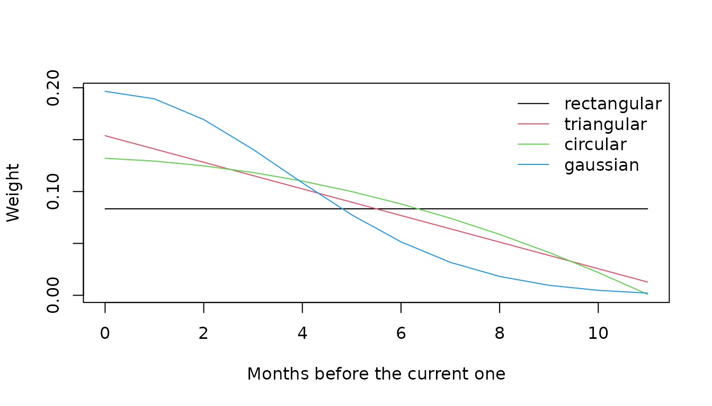
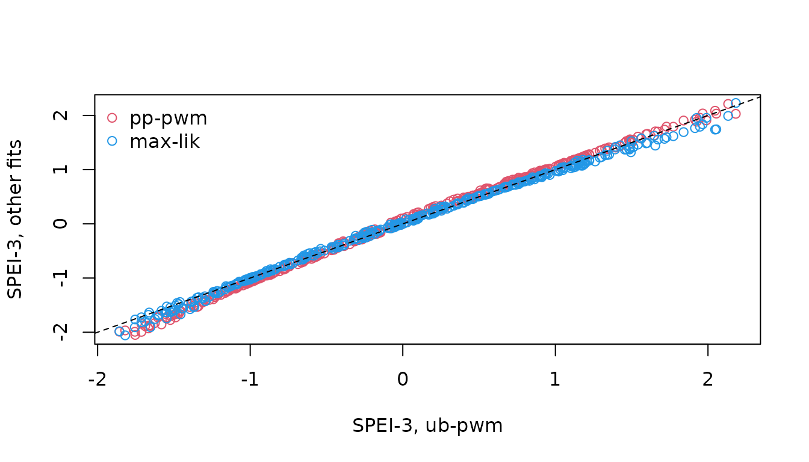

With the default options, spei() and spi()
compute the indices as they were originally defined. This vignette
explains the options that change how they are computed, and when it
makes sense to use them:
- the time scale and the kernel;
- the probability distribution and the fitting method;
- the reference period, and reusing fitted parameters;
- missing values, and values outside the fitted distribution.
We use the wichita data, as in
vignette("SPEI"):
library(SPEI)
data(wichita)
wichita <- ts(wichita[, -c(1, 2)], start = c(1980, 1), frequency = 12)
prcp <- wichita[, "PRCP"]
bal <- prcp - hargreaves(wichita[, "TMIN"], wichita[, "TMAX"],
lat = 37.6475, verbose = FALSE
)Setting verbose = FALSE silences the report of the
options used, which the functions print by default.
Time scale
The time scale, scale, is the number of months over
which the data are accumulated before standardizing. It sets the memory
of the index:
- 1 to 3 months: conditions of the soil surface, rain-fed crops in the growing season, flows in small catchments;
- 6 to 12 months: river flows, reservoir storage;
- 12 to 48 months: groundwater and other slow systems.
These ranges are only indicative. The time scale that best matches a given system is usually found by computing the index at many scales and correlating each with an observed variable, such as crop yields or tree-ring widths.
Kernel
By default, all the months in the time scale have the same weight (a
rectangular kernel). The kernel argument gives more weight
to the recent months, with the shapes "triangular",
"circular" and "gaussian":
k <- sapply(c("rectangular", "triangular", "circular", "gaussian"),
function(type) kern(12, type)
)
matplot(0:11, k, type = "l", lty = 1, col = 1:4,
xlab = "Months before the current one", ylab = "Weight"
)
legend("topright", colnames(k), col = 1:4, lty = 1, bty = "n")
shift moves the highest weight back in time, by a number
of months. See ?kern for details.
spei12 <- spei(bal, 12, verbose = FALSE)
spei12_gau <- spei(bal, 12,
kernel = list(type = "gaussian", shift = 0), verbose = FALSE
)
cor(spei12$fitted, spei12_gau$fitted, use = "complete.obs")
#> [1] 0.8056537The rectangular kernel is the standard definition, and the one to use for results that should be comparable with other studies.
Distribution
For each calendar month, the functions fit a probability distribution to the accumulated values, and convert each value to the standard normal scale through its cumulative probability. Three distributions are available:
| Distribution | Default for | Data |
|---|---|---|
"log-Logistic" |
spei() |
any values, including negative ones |
"Gamma" |
spi() |
non-negative values only |
"PearsonIII" |
non-negative values only |
For the SPEI, use the log-Logistic distribution. The water balance can be negative, and the three-parameter log-Logistic fits it well across climates. The Gamma and PearsonIII distributions are fitted to positive values only; negative values get a warning and the lowest possible index value.
For the SPI, the Gamma distribution is the standard,
as defined by McKee et al. (1993). The PearsonIII distribution has a
third parameter, for the shape, so it is more flexible and can fit
skewed precipitation better; Guttman (1999) recommended it for the SPI,
and it can be preferred, at the cost of departing from the original
definition. Months with zero precipitation are handled through the
probability of zero precipitation (pze) in each calendar
month: the fitted distribution covers only the positive values, and the
zeros get an index value set by pze, the share of zeros in
that calendar month. Wichita has four months with no precipitation; this
is how each distribution handles them at a 1-month scale:
spi1 <- sapply(c("Gamma", "PearsonIII", "log-Logistic"),
function(d) spi(prcp, 1, distribution = d, verbose = FALSE)$fitted
)
round(spi1[prcp == 0, ], 2)
#> Gamma PearsonIII log-Logistic
#> [1,] -1.86 -1.33 -1.41
#> [2,] -1.85 -1.37 -1.42
#> [3,] -1.53 -1.34 -1.46
#> [4,] -1.53 -1.34 -1.46The distributions can also differ in the tails. With positive skew,
as is usual for precipitation, the PearsonIII distribution is bounded
below, and here it returns -Inf for three months whose
precipitation falls below that bound:
colSums(is.infinite(spi1))
#> Gamma PearsonIII log-Logistic
#> 0 3 0See the section Values outside the fitted distribution below.
Fitting method
The parameters of the distribution are estimated, by default, with
unbiased probability-weighted moments (fit = "ub-pwm"). Two
alternatives are available:
-
"pp-pwm": probability-weighted moments based on plotting positions; -
"max-lik": maximum likelihood, for the log-Logistic distribution only. It starts from theub-pwmestimates. For Gamma and PearsonIII it gives a warning and usesub-pwm.
fits <- sapply(c("ub-pwm", "pp-pwm", "max-lik"),
function(f) spei(bal, 3, fit = f, verbose = FALSE)$fitted
)
plot(fits[, "ub-pwm"], fits[, "pp-pwm"], col = 2,
xlab = "SPEI-3, ub-pwm", ylab = "SPEI-3, other fits"
)
points(fits[, "ub-pwm"], fits[, "max-lik"], col = 4)
abline(0, 1, lty = 2)
legend("topleft", c("pp-pwm", "max-lik"), col = c(2, 4), pch = 1, bty = "n")
The three methods agree closely near the centre of the distribution,
and differ more in the tails, where the values depend on the shape of
the fitted distribution. With about 30 values per calendar month, as
here, ub-pwm is robust and is the method used in the
original definition and in the SPEIbase dataset. Maximum likelihood can
be more efficient with long series, but it is slower.
Reference period
By default, the distributions are fitted to the whole series. With
ref.start and ref.end, they are fitted to a
reference period only, and the index is then computed for the whole
series relative to that period. This requires data to be a
time series, with the dates given as year and month:
spei12_ref <- spei(bal, 12,
ref.start = c(1980, 1), ref.end = c(1999, 12), verbose = FALSE
)
round(window(cbind(all = spei12$fitted, ref = spei12_ref$fitted),
start = c(2011, 6)
), 2)
#> all ref
#> Jun 2011 -1.35 -1.18
#> Jul 2011 -1.59 -1.54
#> Aug 2011 -1.70 -1.73
#> Sep 2011 -1.78 -1.70
#> Oct 2011 -1.74 -1.66A fixed reference period, such as 1981–2010 or 1991–2020, makes the values comparable between studies and over time, because adding new data doesn’t change the past values. It is also the way to measure change relative to a baseline: with a reference period early in the record, a trend towards drier conditions shows as an increasing frequency of negative values.
Values outside the reference period can lie beyond the range of the distribution fitted to it. See the last section.
Reusing the fitted parameters
The fitted parameters are stored in the coefficients
element of the result, as an array with one set per series and calendar
month:
spei12_80s90s <- spei(window(bal, end = c(1999, 12)), 12, verbose = FALSE)
dim(spei12_80s90s$coefficients)
#> [1] 3 1 12
dimnames(spei12_80s90s$coefficients)[[1]]
#> [1] "xi" "alpha" "kappa"Passing them through params computes the index of new
data with those parameters, without fitting again. This is how an
operational drought monitor works: the parameters are fitted once to a
reference period and then applied to each new month. The result equals
that of the reference period option:
spei12_new <- spei(bal, 12, params = spei12_80s90s$coefficients,
verbose = FALSE
)
all.equal(spei12_new$fitted, spei12_ref$fitted)
#> [1] TRUEdistribution must be the same as in the call that
produced the parameters. For Gamma and PearsonIII, the array also holds
the probability of zero precipitation, pze, of the
reference period.
Missing values
By default, the data must not have missing values. With
na.rm = TRUE, the missing values are left out of the
fitting, and the index is NA where the accumulated value is
missing. At a scale of 12 months, a single missing month makes 12 values
of the index missing:
bal_gap <- bal
bal_gap[100] <- NA
spei12_gap <- spei(bal_gap, 12, na.rm = TRUE, verbose = FALSE)
sum(is.na(spei12_gap$fitted)) - sum(is.na(spei12$fitted))
#> [1] 12A calendar month with no data, or with the same value every year,
can’t be fitted, and its index is NA.
Values outside the fitted distribution
The log-Logistic and PearsonIII distributions fitted by
ub-pwm are bounded on one side. A value beyond the bound
has a probability of exactly 0 or 1, and the index is -Inf
or Inf. This happens mostly in two cases:
- with a reference period, for values outside it that are more extreme than any value in it;
- in very dry climates, where the distribution of the water balance is highly skewed.
sum(is.infinite(spei12_ref$fitted))
#> [1] 5These values are real extremes: they are beyond anything in the data the distribution was fitted to. How to treat them depends on the use. For maps and statistics it is common to set them to a large finite value, such as ±3, rather than leaving them out:
x <- spei12_ref$fitted
x[x == Inf] <- 3
x[x == -Inf] <- -3If they are frequent, check the reference period and the distribution: a longer reference period, or a different distribution, may fit the data better.
References
Guttman, N.B. (1999). Accepting the Standardized Precipitation Index: a calculation algorithm. Journal of the American Water Resources Association, 35(2), 311–322. https://doi.org/10.1111/j.1752-1688.1999.tb03592.x
McKee, T.B., Doesken, N.J., Kleist, J. (1993). The relationship of drought frequency and duration to time scales. In Proceedings of the 8th Conference on Applied Climatology, 17–22 January 1993, Anaheim, California. American Meteorological Society, Boston, 179–184.